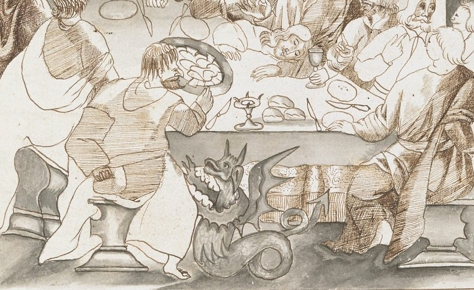
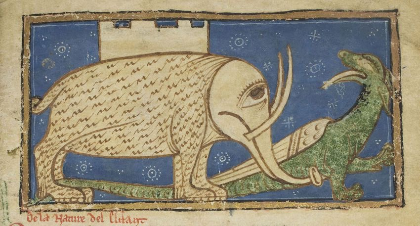

Les dragons étaient une source d'inspiration sans fin pour les copistes qui décoraient les manuscrits de leurs plus belles enluminures ou de petits croquis griffonés dans les marges. Et ils sont magnifiques !
Voici (pour Sam) une collection de dragons manuscrits.
Add. Ms. 26878 f.67v, partagé par @SephardiPal
Dragons de toutes les formes et couleurs
Avignon MS 29, partagé par @DamineKempf
Lausanne, Bibliothèque U 964 f.242r, partagé par @Zweder_Masters
Ce dragon qui empêche un personnage de tomber du haut du D provient de la Biblia Porta, une bible enluminée de la fin du 13e siècle. Cette bible est unique pour la qualité de ses illustrations, on y trouve de nombreux dragons comme par exemple ce magnifique dragon sauterelle ou bien ces deux jolis dragons qui décorent ce E majuscule.
 Lausanne, Bibliothèque U 964 f.343r
Lausanne, Bibliothèque U 964 f.343r
 Lausanne, Bibliothèque U 964 f.313r
Lausanne, Bibliothèque U 964 f.313r
D'ailleurs les dragons se déplacent souvent deux par deux. Ceux qui ont une deuxième tête au bout de la queue sont des amphisbènes.
Royal MS 13 A XI, partagé par [@FW_Medieval]https://x.com/FW_Medieval/status/884779561078140932
British Library, Royal MS 2 B VII f.138v, partagé par @Stewart_Brookes
Harley MS 4751, f.62r
MS. Michael 619, f.100v, partagé par @Stewart_Brookes
Les dragons micrographiques se cachent dans les bibles hébraïques, en voici un exemple.
British Library, Add MS 21160, f. 202r, partagé par @SephardiPal
Add MS 15241, partagé par @BLAsia_Africa
Chambéry BM MS 4, partagé par @DamienKempf
Add Ms 82945 f.12r, partagé par @BLMedieval
Harley MS 7026 f.13r, partagé par @OnlineMythIndia
Dragons volants
Partagé par @DamienKempf
BL Ruthland Psalter, partagé par @DamienKempf
BnF, MS Latin 7321A, partagé par @DamienKempf
Partagé par @BLMedieval
Dragons de compagnie
Qui n'aimerait pas avoir, comme sainte Marguerite d'Antioche, un de ces mignons dragons pour animal de compagnie ?
Morgan, MS M1078, partagé par @DamienKempf
BnF, Latin 1171, partagé par @DamienKempf
Cambrai, Bibl Mun, ms. 102, partagé par @Zweder_Masters
Les activités du jour: jouer de la flûte, manger et dormir !
Getty, MS 63, partagé par @DamienKempf
Cologny, Cod. Bodmer 49 f.82v, partagé par @DamienKempf
 Bodleian 264, f.2v.
Bodleian 264, f.2v.
Dragons affamés
 Partagé par @BL_AdiKS
Les bestiaires médiévaux nous apprennent que les dragons surchauffaient en crachant du feu, et se rafraîchissaient en mangeant les éléphants réputés pour leur sang froid.
Add. ms 11390, f.13r, partagé par @Stewart_Brookes
Add. ms 11390, f.13r, partagé par @BLMedieval
 Trinity College Library, O.2.14, f.60r, partagé par @DannyDutch
Après avoir mangé un éléphant, pas étonnant que ce dragon soit bien dodu !
Partagé par @Zweder_Masters
Dragon ou Dino
Dragon ou dinosaure ? Celui-là en tout cas ressemble bien à un vélociraptor !
HB VII 4 f.131r, partagé par @Calthalas
Un dragon pas très médiéval
Et pour finir, un petit dragon qui se cache parmi les plantes: il s'agit de l'image de fond utilisée pour le blog qui provient de "Die Pflanze in Kunst und Gewerbe" d'Anton Seder.
 Anton Seder 1887, Die Pflanze [...] vol. 1, planche 76. Voir en ligne
Anton Seder 1887, Die Pflanze [...] vol. 1, planche 76. Voir en ligne